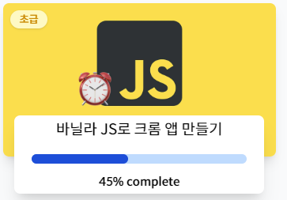
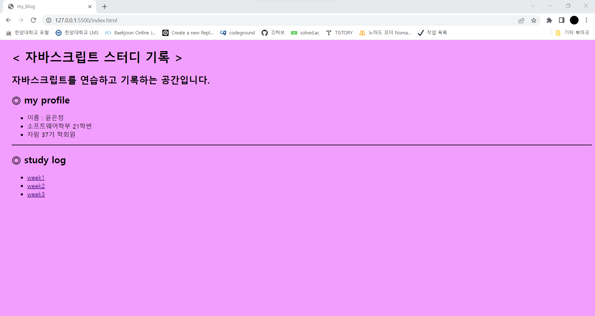
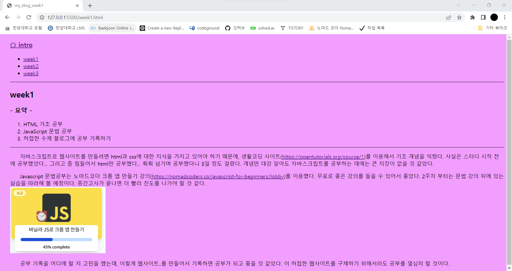

week1
- 요약 -
- HTML 기초 공부
- JavaScript 문법 공부
- 허접한 수제 블로그에 공부 기록하기
자바스크립트로 웹사이트를 만들려면 html과 css에 대한 지식을 가지고 있어야 하기 때문에, 생활코딩 사이트(https://opentutorials.org/course/1)를 이용해서 기초 개념을 익혔다. 사실은 스터디 시작 전에 공부했었다... 그리고 좀 힘들어서 html만 공부했다... 휙휙 넘기며 공부했더니 3일 정도 걸렸다. 개념만 대강 알아도 자바스크립트를 공부하는 데에는 큰 지장이 없을 것 같았다.
Javascript 문법공부는 노마드코더 크롬 앱 만들기 강의(https://nomadcoders.co/javascript-for-beginners/lobby)를 이용했다.
무료로 좋은 강의를 들을 수 있어서 좋았다.
2주차 부터는 문법 강의 뒤에 있는 실습을 따라해 볼 예정이다.
중간고사가 끝나면 더 빨리 진도를 나가야 할 것 같다.

공부 기록을 어디에 할 지 고민을 했는데,
이렇게 웹사이트..를 만들어서 기록하면 공부가 되고 좋을 것 같았다.
이번 스터디를 통해 이 웹사이트도 좀 모양새 있게 만들어졌으면 좋겠다.

